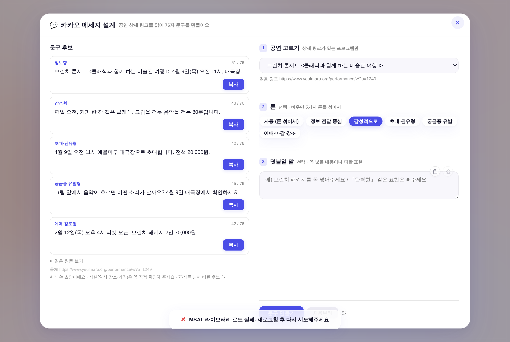

프로그램 시트 K열 상세 링크를 서버가 열어 ①페이지 본문 ②포스터·상세페이지 OCR을 읽고, LLM이 76자 이하 후보 5개를 만든다.
진입점은 둘, 엔진·후보 카드는 한 벌이다 —
① 홍보 신청 위저드의 76자 칸 [AI 문구 제안](→ 넣기) ② 콘텐츠 제작 ▸ 「카카오 메세지 설계」(→ 복사).
이 페이지는 만지는 시안이다 — 오른쪽에서 [AI 문구 제안]·[이 문구 쓰기]를 실제로 눌러 볼 수 있다(문구·OCR 원문 = 260805 실측 페이지 기반 목데이터, 네트워크 호출 없음).
같은 파이프라인을 독립 도구로도 연 것. 공연을 고르면 그 상세 링크를 읽어 후보를 만들고, 여기서는 복사해 어디든 쓴다.
셸은 openLogoMaker(lm-*) 골격 계승 — 레이아웃 CSS를 그대로 재사용해 새 CSS 클래스 0.

담당자 요청 한 줄로 합쳐 보낸다 — 서버 프롬프트를 안 건드린다._kkoCardsHtml·_kkoSourceHtml) — 한 벌만 고치면 양쪽이 같이 바뀐다.<article> 안 + /inday_fileinfo/」 — 처음에 쓰려던 og:image는
전 페이지 공통 기본값이라 포스터가 아니었다(og:title도 「예울마루」 고정).
/src/img/는 로고·스와이프 등 크롬, 헤더 네비의 대관 썸네일은 /inday_fileinfo/지만 <article> 밖.
두 조건을 함께 걸어야 포스터+상세페이지 2장만 남는다 — 공연·전시 양쪽에서 정확히 2장 확인.count+2개를 요청해 여유분을 둔다. 경계 실측 = 76자 통과 · 77자 폐기.:root 0(전부 var()). 신규 버튼은 기틀 §2 #1 .btn 조합 · 라벨 텍스트만.node --check ✓ · 앱 스크립트 블록 node --check ✓_pwData.kakaoText 동기.GEMINI_API_KEY로 도는 실제 OCR·LLM 왕복은 이 세션에서 못 돌렸다(세션에 키 없음).
main 머지 → Worker 자동 배포 후 실공연 1건으로 첫 호출 확인 필요. 소요는 20~40초로 안내 중.